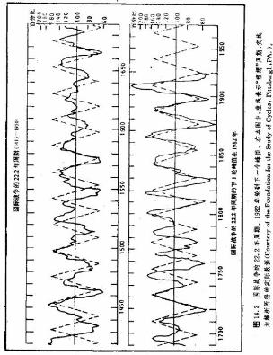

第十四章时间周期
引言
以前，我们的讨论主要集中在价格运动上，很少谈及时间因素对解决市场之谜的重要意义。贯穿本书所有关于技术分析的内容，我们或多或少都要暗示到时间间题，但以前一般是把它作为次要的方面来考虑
的。本章，我们要介绍时间周期。在周期分析者眼中，这个问题是理解市场涨落现象的最关健之处。我们就来看看他们是如何考虑市场预测间题的。同时，我们打算给我们越来越丰富的分析工具包中，再添上时间这个重要的方面。这里我们所要解决的，不再是市场要向哪个方向运动、目标有多远的问题，而是要探究何时市场将达到那里，甚至是何时市场将开始转折的问题。
我们以标准的日线图为例。其中垂直轴表示价格，但这仅是有关资料的一个方面。水平轴表示时间。因此，线图其实是时间——价格图。可是，很多人单单执迷于价格资料，而忽视了时间因素。在研究价格形态的时候，我们获悉;形态形成时所经历的时间长短，与随后的市场变化的余地之间，存在着一定的关系。趋势线、支撑水平和阻挡水平保持有效的时间越长，则其影响力越强。即便是摆动指数，我们也需要对其时间参数作出选择。在前一章中，我们也曾列举了菲波纳奇时间目标的用处。
很显然，在各种技术分析方法中，都必须在一定程度上考虑时间因素。不过，这些考虑方式各行其是、各有一套，因此不太可靠。而时间周期正好对症下药。周期分析者认为，时间周期是决定牛市和熊市的决定性因素，而不是次要的或辅助性的角色。一方面，时间因素在市场上占据统治地位，另一方面，所有的技术工具再加上时间周期后，便如虎添翼。例如，移动平均线和摆动指数就可以通过主流周期而得到优化。在趋势线分析中，我们可以借助周期分析对趋势线进行甄别，以确认有效的趋势线。在价格形态分析中，如果结合考虑周期的峰和谷的分布，也能提高其效能。另外，我们还可以通过“时间窗”方法，对价格行为进行过滤，略去无关紧要的变化，突出重要的周期性顶和底附近的变化。
周期
每次讲到周期，我都要先向大家提间，有没有人能够预见未来。间完后，课堂上通常是一阵不自在的沉默。这时，我就拿出当天的当地报纸，做一点“预测’示范。比如，我告诉大家，明天早晨6:47太阳升起，下午4：35太阳落山。明天蒙托克角的高潮位出现在凌晨4:36和下午5：03。下一次晦月在11月22日，满月在1月8日，等等。大家越听，越是交头接耳，但我不作理会，只问大家，有没人对它们有怀疑。这时候大家的反应总是很滑稽。虽然没有人怀疑上述事件一定会应验，但是从大家的表情上看，好象我愚弄了大家。说到底，好象我并未真正预见未来。不，且慢.到底我有没有呢?
这番造作的目的是要说明以下几点。首先，每天我们的确是以惊人的准确程度预料未来的，至少对大自然或天文事件是这样的。其次，因为存在着可以明确定义的重现周期，所以我们的预期可能达到高水平的准确度、而这些周期已经成为我们生活的重要组成部分，以致于利用它们做的预测已经毫无出奇之处。如果我们设想它们将持续下去，那么，只要把过去简单地投射到未来。就能预知未来.
那么，如果我们在人类活动.中也找出了类似的重现周期，情况如何呢?如果我们确实证明大多数人类行为具有一定重现周期，情况又如何?把这些周期推衍到未来，我们是不是就能够预测未来呢?如果我们能够证明商业周期、股市周期、以及商品期货市场的周期确实存在，那该怎么办呢?利用这些周期来预侧未来的市场趋势，难道不是合情合理的事吗?
关于周期理论，我读过的最吸引人的书要数《周期:触发事件的神秘力量》(马诺尔书社，1973)，是爱德华。R。杜威与奥格·曼迪诺合著的。前者是一位周期分析的先驱。在这本书中，他们得出了成千上万个乍看上去风马牛不相及的周期，其时间跨度有的达数百年，有些甚至
上千年。他们的研究包罗万象，既有标志大西洋鲑鱼丰收年份的9.6年的周期，也有从1415年到1930年期间的国际战争爆发的周期，22.20年。从1527年以来，太阳黑子活动年的平均周期为11.11年。另外书
中还介绍了几种经济周期，包括地产业的18.33年周期，股市的9.2年周期等(见图14.1和14.2)。
杜威揭示了两个惊人的结论。其一，许多周期所描述的对象虽然看起来毫不相干，它们本身却密集地分布在相近的长度附近。在上面提到的那本书的第188页，杜威列举了各种周期长度均为9。6年的事例，其中包括新泽西州毛虫爆发的周期、加拿大土狼头数周期、美国小麦播种面积周期、美国棉花价格周期等。为什么那么多的毫无联系的事物具有相同的周期呢?
其二，上述相似周期是同步的，即它们的转折点相互吻合。在图14.3中，是同样都具有18.2年周期的12种事例，其中包括结婚对数、移民人数、美国的股票价格等。杜威对这种现象的解释也可谓骇人听闻。他认为在宇宙中必定存在着某种神秘的力量，控制着这些周期：就是说，宇宙具备某种脉动的特点，从而引发了遍布人类世界的许多领域中的上述周期。
1940年，杜威在匹兹堡成立了周期研究基金会。这是最早从事周期研究的组织，被公认为执该领域的牛耳。基金会办有《周期》杂志，发表了涉及许多领域的有关研究报告，其中也有经济和商业两个方面，包括对股市和商品市场这方面的研究。
墓本的周期概念
1970年，J·M·赫斯特发表了《股票交易审时度势的获利秘诀》（普伦蒂斯一霍尔公司），本书主要研究股市周期，但是它对周期理论的解释也极精采，是一本难得的佳作，很值得一读。三年之后，周期技术咨询公司出版了一本关于周期理论的教程。该书以赫斯特的著作为基础，并将其应用范围扩展到了其它的投资媒介，如商品期货等。以下是我们关于周期理论的简要介绍，其中大部分引自这两本书。
首先，让我们来看一看周期的形状，然后，再讨论一下它的三个方面的主要特征。图14.4显示了重复出现的一种价格周期。周期的底部称为波谷，顶部为波峰。注意，图中两个周期长度的测量是从谷到谷地进行的，周期分析者偏好从谷到谷地测量周期长度。当然，我们也可以从峰到峰地测量但是一般认为，峰不如谷那样稳定、可靠。因此，通常的做法如本例所示，是沿着周期波动的低点来测量周期长度的。

周期具有三方面特征:波幅、周期长度和相位。如图14.5所示，波幅是波的高度，其单位是美元、美分或点数。周期长度如图14.6所示，是两谷之间的时间差。在这个例子中，周期(长度)都为20天。相位是波谷的时间位置。在图14.7中，显示了两个波的相位差。因为在市场上往往有好几种周期在同一时间出现，所以相位分析有助于分析者比较不同周期长度之间的关系。相位分析也有助于我们认定下一个波谷出现的日期。例如，如果20天的周期在10天前出现了波谷，那个下一个波谷的日期就可以确定了。一旦我们了解了某周期的波幅、周期长度和相位，从理论上说，就能够把它推延到未来。假定周期具有相当的连续性，我们就可以依之估计未来的峰和谷的情况。这一点正是周期技术的基础。不过，这还是其应用的最简单的形式。
周期理论
现在我们来讨论周期理论的几条基本原理。其中最重要的四条分别是:叠加原理、谐波原理、同步原理、比例原理。
叠加原理是，所有的价格变化均为一切有效周期简单相加的结果。在图14.8中，最上方的价格形态，是通过下面两个周期简单地叠加得来的。请特别注意在叠加波C波上出现的双重头的形状，周期理论认为，所有的价格形态都是由两个或两个以上不同的周期叠加而成的。后面我们还要再讲到这一点。叠加原理对周期理论的理论基础提出了重要的注解。由之我们假定，所有的价格变化都只是不同周期之和；更进一步地，假定我们能够从价格变化中分解出每个周期成分，那么，只要把每个周期都简单地向后推延，然后再合成起来，结果就应当是未来的价格趋势了。换言之，这就是周期理论的要诀。
谐波原理较简单，指相邻的周期长度之间通常存在倍数关系，一般为2倍或者1/2的关系。例如，对一个20天的周期来说，下一个较短的周期通常是它的一半，10天。上一个较大的周期通常就是40天。在第九章中我们讲过四周规则，如果朋友们还记得，我们曾经在那里利用谐波原理来解释更短的两周规则，以及更长的八周规则。
同步原理是指一种强烈的倾向性，即不同长度的周期常常在同一时刻达到谷低。图14.9试图显示谐波原理和同步原理的情形。图中下面的B波长度为A波的一半。A波中包含了两个B波周期，表现出了A、B两波的谐波关系。请注意，当A波到底时，B波也每每处于波谷，显示了两波之间同步关系。另外，根据同步原理，不同市场、但长度相近的周期往往也是同时进退的。
比例原理描述的是，在周期长度与波幅之间具备一定的比例关系。周期越长，那么其波幅也应当成比例地较大。比如，40天周期的波幅，应当差不多是20天周期波幅的2倍。

变通原理和基准原理
另外还有两个从更一般意义上描绘周期行为的原理——变通原理和基准原理。
变通原理恰如名称所示，指上述原理——叠加原理、谐波原理、同步原理、比例原理—都只是市场的强烈的倾向性，而不是严格不变的规则。对于这一事实，其实我们在上面介绍它们时都已经打过招呼了。在实际应用时，情况通常会有所变化。
基准原理认为，尽管各种市场之间均存在一定的差异，并且在我们应用上述周期原理的时候也都容许我们有所变通，但是仍然存在一系列基准的谐波周期，适用于所有市场。这种基准的谐波棋型是研究任何市场的起点。图14.10b表示了一个简化的墓准模型。其中从1年周期开始，逐渐向较短的周期排列，每一次都减短一半。这当中唯一的例外是在从54个月到18个月的地方，我们选用了前一周期的三分之一，而不是它的一半。
等我们讨论各个具体期货市场的各种周期的时候，朋友们会看到，这个基准模型包容了绝大部分周期。这里我们且看“天数”那一列。注意其中的40天、20天、10天和5天。朋友们马上会发现，这些就是最流行的移动平均线的时间跨度。即便是出名的4天、9天和18天移动平均技术，也只不过是5天、10天和20天的变通形式。许多摆动指数的时间跨度为5天、10天或20天。周期规则采用的也是同样的数字，但对应地转换成2周4周和8周了。
如何利用周期概念来理解图表技术
赫斯特的著作的第三章，详尽地解释了如何利用周期理论更好地理解标准的图表技术——趋势线和管道线、图表形态和移动平均线等问题，进而说明了如何将它们与周期理论协调起来，以取得更高的效力。图14.11表示周期理论有助于我们理解趋势线和管道线。图表下方的波动，在叠加到长期的上升趋势(用一条上升直线表示)之上以后，演变为上升的价格管道。请注意，下方沿图底部横向伸展的波动与摆动指数何其相似。
图14.12引自这本书的同一章，表示如何把两个周期与一条上升直线组合起来，构成头肩形顶部形态。其中的上升直线代表所有长期的周期成分之和。往下，赫斯特还利用周期理论解释了双重顶、三角形、旗形、三角旗形等价格形态。例如，V型顶或底出现在短周期的转折点恰巧与其上一级长周期、再上一级长周期的转折点吻合的时候。
另外，赫斯特还研究了如何把移动平均线与主流周期同步化以改进其效果的间题。朋友们通过学习赫斯特书中的“图表形态追根究底”一章，可以对传统的图表技术加深理解，了解其由来及其之所以起作用的根本原因。
主流周期
影响商品期货市场的周期很多，但其中只有一个最具有顶测价值，我们称之为主流周期。主流周期对期货价格具有持久的影响力，它的存在在图表上清晰可辨。在前面关于长期图表的一章中，我们强调过，无论进行什么样的技术分析，都应当从长期图表开始，逐步过渡到短期图表。这一原则在周期分析中当然也同样地成立。这里恰当的分析程序是，先从长期的主流周期开始，其时间跨度可能为数年。其次是中等周期，时间跨度为数周到数月，最后，轮到极短期的周期，其长度从几小时到数天不等。这种分析方法可用来解决入市和出市点问题，并有助于我们验证较长期周期的转折点的位置。
周期分类
周期分析者连对某周期的长度如何都颇有争议，更不用说按周期长度对周期进行分类了(见图14.13)。考虑到这种含糊之处，我们这里只打算尝试一下主要周期的分类。一般的分类是:长期周期(长度为2年或2年以上)，季节性周期（1年），基本周期、或中等周期(9周到26周)，以及交易周期(4周)。上述均为主要周期，当然还有其它周期。在有些市场上，有一种1/2基本周期，介于基本周期同交易周期之间。交易周期也可以进一步细分为更短的阿尔法(α)周期和贝塔(β)周期，它们的平均长度均为2周(基本周期、交易周期、阿尔法周期和贝塔周期等说法，第一次是出现在沃尔特·布雷塞特写的《霍尔市场周期》中，这篇文章描述了各种周期长度)。
康德拉蒂耶夫波
在市场上起作用的甚至还有更长的周期。其中最著名的或许是为期达4年的康德拉蒂耶夫周期。关于这个长期的经济活动周期目前还有争议。它是在本世纪20年代，由俄国经济学家尼古莱·D·康德拉蒂耶夫首先发现的。看来，这个周期实质上对所有的股票和商品的价格都具有重要影响。特别值得一提的是，我们在利率、铜、棉花、小麦、股票、以及批发商品价格等市场中，都已经鉴别出了54年周期。康德拉蒂耶夫从1789年考察起，对商品价格、铸铁产量、英格兰的农业工人工资进行了这种“长波”的追踪研究(见图14.14)。近年来，康德拉蒂耶夫周期成了热门话题，主要原因是，它的上一个波峰出现在20年代，那么下一个主要波峰就应该在80年代。康德拉蒂耶夫本人为他的“资本主义经济学的”周期观付出了沉痛的代价。据信，他是在西伯利亚的劳改营中度过余生的。有关进一步的资料请见《长波周期》，尼古莱·康德拉蒂耶夫原著，盖伊。丹尼尔斯译(理查森和斯奈德版,1984年)。这是第一个从俄文原著直接翻译的译本。
综合各种周期
一般地，长期周期和季节性周期决定了市场的主要趋势。显然，如果2年周期已经从低谷抬头了，那么我们至少可以预料，从这个谷到下个峰，市场将在之后的一年中呈上升态势。因此，长期周期对市场趋势具有主要的影响。另外，市场上还有以年为度的季节性形态，往往在一年内的一定时候出现峰和谷。例如，谷物市场通常在收割的时候达到低谷，随后再开始上冲。季节性变化通常延续数月。
从实际交易着眼，基本周期最有用。3个月到6个月的基本周期相当于中等趋势，一般决定了我们的交易方向。下一个更短的周期是4周交易周期，可以用来确定顺着基本趋势(中趋势)方向的入市点和出市点。如果基本趋势向上，我们就利用交易周期的谷来达成买进的目的。如果基本趋势向下，我们则利用交易周期的峰来卖出。而为期10天的阿尔法和贝塔周期可以用来作进一步的细致调整(见图14，13)。
趋势的重要性
在讲解技术分析理论的过程中，我们处处都要强调顺应趋势交易的意义。前面我们曾指出，如果中等趋势向上，则应在市场的短暂回落中买入，如果中等趋势向下，就应在短暂的上涨中卖出。在“艾略特波浪理论”一章中，我们曾交代，只有在与上一层次的趋势方向一致的条件下，才会出现五浪结构的市场运动。因此，当我们利用短暂趋势来选择时机时，必须首先确定其上一层次的趋势方向，顺着这个方向交易。在周期理论中，这一点也同样成立。对于每一周期来说，其趋势方向是由它上一层次的周期方向所决定的。换句话说，一旦我们确定了趋势方向，那么，下一层次的较短周期的方向就明确了。
CRB期货价格指数的9个月到12个月的周期
每个期货市场都有自己独恃的周期长度的组合。但是，也可能存在一定的通用周期，作用于总体的商品市场。广泛性的商品价格指数，如商品研究局期货价格指数等，最便于揭示这些周期(见图14.15)，前面已经提到了54年周期5.5年和11年是另外两个稍短的周期。然而，从实际交易的角度看，在CRB期货价格指数上最有价值的是从9个月到12个月的周期。其平均长度为10.5个月(是从谷到谷地度量的)。
在第八章，我们讨论了追踪CRB期货价格指数，以把握总体商品价格的重要意义。在我们对任何具体的商品市场进行分析之前，首先必须确定总体商品价格的方向。如果总体商品价格正在上涨，那么判断个别市场为上升趋势就有较大的把握。因此，在制订交易策略时，借助CRB指数的10.5个月的周期，我们可以获得极大的优势。因为商品市场的确倾向于进退与共，所以，CRB期货指数何时出现下一轮重要波峰或
谷，将应当影响到我们对个别市场、或某个商品群类的评估。
我们把CRB指数的10.5个月的周期一直追溯到了50年代。但是，这个周期是不对称的，就是说，如果我们不是从谷到谷地，而是从峰到峰地度量周期长度的话，结果就不会这祥可靠了。这正是周期的普遍性的特点。关于周期峰值的位里，这里还有一点需要说明。如果商品价格的趋势向上，那么其周期峰值往往比预料出现得晚一些。在主要趋势向下的情况下，峰值往往提早出现。这也是周期分析的一个重要方面，我们在“波峰右移和左移”一节再详谈。
28夭交易周期
28天交易周期是一个重要的短期周期，往往影响到绝大多数商品市场。换言之，绝大部分市场都倾向于每四周出现一个属于交易周期的低点。月亮的周期也许解释了这种遍布所有商品市场的强烈的周期性倾向。伯顿·皮尤研究了30年代小麦市场的28天周期(《小麦交易中的科学与神秘主义》，兰伯特一江恩版，1978年)，结果表明，月亮周期对市场的转折点的分布有一定影响。按照他的理论，我们应当在满月时买进小麦，在晦月时卖出。不过皮尤也承认，月亮的效应是温和的，长期周期以及重要的新闻事件能够掩没其效果。
不论月亮与28天周期有无联系，这总是一个客观存在，何况它能够解释许多短期技术指标和交易系统的时间参数间题呢。说到底，28天周期是按照日历计算的。如果把它转换成实际交易日，则为20天。我们曾介绍过，很多流行的移动平均线、摆动指.数、周规则等，都是以20天、及其谐波周期10天和5天为基准的。5天、10天和20天移动平均线及其变通形式，4天、9天和18天移动平均线的应用均极广泛。CRB期货图表系统采用的就是10天和40天移动平均线，其中40天周期2倍于20天周期，是后者的上一层次的谐波周期。
在第九章，我们讲解了理查德·唐迁首创的四周规则。如果市场涨出了四周内的新高位，则构成买入信号;如果市场跌出了四周内的新低位，则是卖出信号。现在我们已经掌握了28天的交易局期，就能对四周规则之所以采取四周这一时间参数，以及它之所以效力不凡等间题，有更深的理解了。根据周期理论，如果市场突破了前四周内的高位，那么至少说明，上一层次的周期(八周周期)已经从底部转折向上了。
波峰左移和右移
多年以前，当我致力于期货市场周期的研究时，偶然碰上了波峰左移和右移的概念。直到现在，我始终觉得，这个位移的概念也许是周期分析中最重要的方面.所谓波峰左移和右移，是指实际的周期峰值向左或向右偏离了理论的峰值位置。例如，20天的交易周期是从谷到谷地测算出来的。那么从理论上说，波峰应当出现在离谷10天处，或者说是在两谷的中点上。这样一来，市场就先是10天上涨，然后是10天下跌。然而，很少发生这种理想的情形。朋友们请记住，绝大多数局期的变异出现在其波峰上，而不是波谷上。这就是一般认为波谷更为可靠的原因，也正因此，我们从谷到谷地测算周期长度。
波峰的变化取决于本周期的上一层次周期的趋势方向。如果其趋势向上，那么波峰向理想中点的右侧偏移，产生右移现象。如果上一层次的较长周期处于下降阶段，则波峰向理想中点的左侧偏移，称为左移现象。因此，右移现象是看涨性的，而左移现象是看跌性的。让我们思考一下.上面我们实质就是说，在牛市中，价格将在较长时间内处于上升阶段，而下跌所占的时间较短.而在熊市中，价格将在较长时间内处于下跌阶段，而上涨所占的时间较短。这不正是趋势的定义吗?只不过这里我们的研究对象是时间，而非价格。
要知道，我们把上升趋势定义为一系列相继递升的峰和谷。而下降趋势则是一系列相继递降的峰和谷。我们可以将这些峰和谷标识为周期的波峰和波谷。现在我们来把趋势的定义和偏移现象两个概念结合起来(见图14.16和14.17)。只要峰和谷依次上升(就是说，价格处于上升趋势)，那么周期的波峰就会朝理想的周期中点右侧偏移(推迟出现)。而当峰和谷依次降低时(即价格为下降趋势)，那么周期的波峰就会向理想周期中点的左侧偏移（提前出现）。唯有在市场上不存在明显趋势的时候，即当买方和卖方的力量对比相对平衡，从而价格处于横向延伸的交易区间时，周期的波峰才能恰巧出现在周期中点上。
下面我们不妨看看右移和左移现象的预测意义。最起码，我们可以通过观察周期中点处的具体情况，更深入地了解趋势的方向。只要价格峰出现在中点右侧，(即，市场的上升阶段将比随后的下降阶段更长)，我们就可以预期上升趋势会持续下去。而当价格峰向周期中点左侧偏移时，通常就构成了警告讯号，意味着当前趋势可能发生变化。在日间价格图上，我们只要简单地比较一下，在最近一轮周期中上升的天数同下降的天数孰多孰寡，就能得出波峰左移或右移的结论。在周线图和月线图上，时间单位虽异，道理相同(见图14.18a到d)。
举例来讲，如果在下降趋势中，上一轮下跌期共延续了12天，那么，接下来的上冲期(熊市中的反弹)就不应当多过12天。这其实说明了两方面的要点。首先，如果下降趋势依然有效，而上冲期已经快要达到12天了，那么，我们常常可以预料这轮上冲结束的确切日期。其次，如果这轮上冲期持续到12天以上的话，那么就意味着趋势反转了。
在周线图上，我们也可以照章办理。不妨以上升趋势为例。如果最近一轮上升期从底到顶共花了7周，那么就意味着市场向下调整期或横向巩固的时间，不应当超过7周。我们可以把这种时间界限与一定的价格比例结合起来。通常，价格最大的向下回撒百分比为50%到66%。同时，最大的回撤时间是7周。那么等到调整发生后，我们既可以在图上标出最大的价格回撤位置，也可以标明最大的回撤时间范围——7周。
如果调整果真一直持续到了第7周，那么这个7周的时间界限就极派用场了。这一点恰恰与在主要的上升趋势线上买进的策略不谋而合。在这种情况下，报偿——风险比对交易者极为有利。因为交易者清楚，如果趋势持续，那么在第7周内价格必然回升，如果市场没有如愿以偿地回升，则他可以断定趋势反转，从而扭转头寸方向。所以，第7周的入市点风险较低。
前面说过，4周的交易周期可以再分为两个更短的周期，称为阿尔法和贝塔周期。其长度都是2周。阿尔法周期的波峰出现在4周交易周期的前半周，或者说是其左侧。贝塔周期出现在它的后半周，即其右侧。因此，在4周交易周期的左移现象中，其波峰通常与阿尔法波峰重合，而在其右移现象中，其波峰通常与贝塔波峰吻合。我们也交代过，阿尔法和贝塔周期是沃尔特.布雷塞特首创的，是周期理论的霍尔方法的一个组成部分。
多年的经验证明，右移现象和左移现象是极有价值的辅助工具。实质上，它们适用于任何趋势或任意长度的周期。不过话说回来，同其它技术工具一样，我们往往也需要进行大量的练习，积累相当的经验，才能得心应手，把它们融会贯通。如果朋友们只打算从这一章中找一条妙计，那就请你在波峰偏移现象这儿下功夫吧。
如何分离各种周期——趋势解析
为了研究在某市场起作用的各种周期，我们首先必须把它们分离出来。具体的做法各种各样。最简便的是凭眼晴观察。例如，在我们研读日线图时，有可能辨识出其中明显的顶和底。把这些顶和底之间的时间间隔平均一下，就能得出一定的平均周期长度。
也可以借助辅助工具来进行这项工作。其中之一，称为“埃利希周期尺”，是斯坦·埃利希发明的。这种尺同手风琴有几分相像，我们可以把它直接放在图上手工操作，其工作原理实际上是把两点之间的距离分作多等分。它伸缩自如，可以适应各种周期长度。只要我们先找出任意两个明显低点之间的距离，就能很快地搜索是不是还有其它与之长度一致的周期性低点存在。
还有些计算机软件可以配合人眼来查找周期(见图14.19a到d)。COMPU TRAC就有一套周期尺的程序，能帮助我们分离各种周期.用户先要把价格图表显示在屏幕上，然后从图上选择一个显著低点作起点。完成这一步后，屏幕上就会出现一系列竖直直线，其间隔为10天(这是缺省值)。我们只要通过很少的几个按键，就可以对之进行调整，如拉长周期、缩短周期、把标志周期的直线向左平移或向右平移等，以找到最适合本图的周期。
数学基础较好的朋友，还可以选择一些较复杂的统计学手段，如博克斯——詹金斯技术、富里叶波谱分析等。COMPU TRAC也提供了一套富里叶分析软件。最近，其中还加入了杰克·赫特森和安东尼·W·沃伦博士制作的快速富里叶变换(FFT)的程序。前一位是《股票和期货技术分析》杂志的编辑。在这本杂志上，发表过相当多关于周期分析的文章，其中包括富里叶变换和赫特森和沃伦的“最大方法”(在辨明主流周期后，我们可以采用富里叶分析，便捷地找出优化的移动平均线和摆动指数的时间参数)。
另外，我们还有一种介于人工观察和七述复杂统计技术之间的方法——趋势解析法。当我们鉴别较短的周期时，趋势的影响是个问题。趋势是由长期周期引起的，它的影响占据统治地位，因而从图上我们很难(如果不是不可能的话)找出短期周期。
我们早就利用移动平均线作为平滑工具了。其平滑效果滤除了短期周期，从而突出了较长周期。趋势解析的过程正与之相反，我们通过消除比移动平均时间更长的周期的效果，使短期周期更明显了。究其实质，就是排除趋势的影响。
该技术相对简易(见图14.20a到b)。我们可以手工操作，更可以借助计算机。首先，我们选定一个移动平均线的时间参数，其长度取决于用户想要分离的周期长度。为了便于说明，我们以40天移动平均线为例。第一步是将移动平均线取中。这就是说，把当天的移动平均值画到21天之前——或者说是周期长度的中点，而不是照过去那样描在当天的位置上。然后，我们把平均线画在图表下部，作为“零线”，把价格重新画在这条零线的上下。结果，短于40天的周期就被突出出来，很便于观察。我们还可以把上述程序继续下去，搜寻更短的周期，直到发现了所有的主流周期为止。在COMPU TRAC软件中也有趋势解析程序。
季节性周期
所有的商品期货市场都在一定程度上受到长度为1年的季节性周期的影响石所谓季节性周期或形态，是指市场在每年中的一定时候朝一定方向运动的倾向。谷物市场的季节性周期最明显。每年收获的时候，新谷物大量涌入市场，常常造成季节性的低价格。举例来说，在大豆市场上，70%的季节性波峰出现在4月到7月间，而75%的季节性低谷发生在8月到11月。一旦市场完成了季节性的顶部或底部形态后，通常在随后的几个月中，价格将持续下降或上升。因此，了解一点季节性倾向，对于我们应用其它各种交易方法来说，都是极有意义的。
就原因来看，在农产品市场上发生季节性变化是显而易见的。但是，实际上所有的市场都存在季节性形态。在所有的市场上，如果1月份的高点被向上穿越了，则是看涨信号。这是一个普遍性的季节性形态。在金属市场上，我们还可以看到其它一些季节性形态。在1月到2月间，铜市具有强烈的季节性上升趋势，往往到3月或4月才会见顶。从1月起，金市也具有季节性的上升力。它的下一个底部往往在8月出现。银市往往在1月见低，3月份走高。
我们可以通过过去数年的季节性变化的频度资料，来构造出季节性变化的图表(见图14.21a和b)。根据在过去数年的同一月或同一星期内出现季节性变化的次数，我们可以算得本月或本星期出现季节性变化的可能性(用百分数表示)。如果其值达到了80%，则属于强烈的季节性形态。而低于65%，就值得推敲了。
在进行季节性周期的研究时，应当注意以下几个问题。其一，绝大多数现货市场的季节性变化的研究，是以各个月的数年的平均价格为基础进行的，有时候，其季节性形态与其期货市场的情况不尽相同。其二，有时候期货市场可能表现出两种不同的季节性形态。而交易者对两种情况均需了然于胸。我们必须考虑到存在两种相反的季节性形态的情况。在某些年份，价格是不服从我们所预期的季节住倾向的.交易者必须留心，注意发现其中不寻常的蛛丝马迹。如果我们能够尽快地判明某个与季节性变化相反的动作，那是很有利的。这是极有价值的信息。一般来说，如果市场不能实现正常的季节性形态，那就表明价格将朝相反的方向发生显著的运动。要是把这一点说得更具体，那么，能够让你尽早地认识到自己的错误，正是季节性周期分析的重要特色。从广义上说，这也正是技术分析的重要特色。
把周期与其它技术工具结合起来
周期分析者强调，必须把其它各种选择时机的工具与周期分析相结合，才能保证入市点的合理性。我们利用“时间窗”或“时间区”来提示周期的转折点的位置。从这一点上看，对时间因素的考虑为价格变化充当了过滤器。不过，一旦市场进入了时间窗，交易者还是必须依靠传统的技术工其，来验证转折点的出现，得出买卖信号。不同的分析者各有自己的一套时机选择工具。
在商品期货市场的周期分析领域，雅各布·伯恩斯坦和沃尔特·J，布雷塞特是两位佼佼者。他们两家的市场通讯主要是墓于周期理论的，备受读者推崇。两人的时机选择方法有所不同。比如说，布雷塞特按照日历日期来选择短线的交易时机，而伯恩斯坦则采用交易日来计算。他们具体使用的时机选择工具也有差别。
伯恩斯坦有一本《商品周期手册:时间窗)(约翰·威利父子公司版，1982年)，很受欢迎。他在书中强调，时间窗如果不与其它各种技术信号相结合，就毫无愈义。在各种技术信号中，他偏重收市价图的趋势线的突破、关健反转日、向上或向下突破前三个时间单位内的收市价格区间等信号。例如，在日线图周期的底部，价格必须收市于前三天内的最高收市价之上，方构成买入信号。而在周线图上，对应的信号则是收市于三周内的最高收市价之上。
布雷塞特在其市场通讯《霍尔市场周期》中，引入了时间和价格窗的概念(在价格图上用方格子做标记)。他认为，周期性的转折应当在其周期长度的70%以内出现。据此，他以70%时间区作为时间目标。为了帮助用户确定这些时间区的位置，他给用户们准备了一种小巧的“霍尔周期尺”。《霍尔周期分析者智囊》这种方法有详细的介绍。
布雷塞特用来综合价格和时何目标的工具有，“周期中点哲停法价格目标”(与第四章中所谓摆动目标技术类似)、60%一40%回撤(显然是对非波纳奇38%一62纬回撤的近似，这在前一章有介绍)、支撑和阻挡水平、以及趋势线等。布臂塞特强调指出，这些工具都必须与周期理论结合起来。举例来说，只有在当前周期的上一层次的趋势能够持续下去的条件下，周期中点暂停法和60%一40纬回撤才能适用于当前周期。
当趋势线是通过具有相同周期长度的各个波峰或波谷连接而成时，它特别有效。例如，趋势线应当通
过两个交易周期的峰或谷，或者连接阿尔法和贝塔周期的峰和谷(它们的周期长度也相等)。这样的趋势线连接了两个长度相同的周期，如果它被跌破了，则意味着其上一层次的周期开始转折了。例如，如果连接阿尔法和贝塔周期的波峰的下降趋势线被涨破了，就表示上一层次的较长周期已经见底回升。我们也把速度线(见第四章)与每个具体的周期结合起来，以验证周期的转折〔见图14.22〕
把周期与摆动指数结合起来
在传统的技术指标中，同周期分析相似点最多的，数摆动指数。这里很有味道。在前面关于摆动指数的一章中，我们交代了如何用它们来揭示市场的超买或超卖状态及其相互背离现象。一般认为，如果把摆动指数的时间跨度同当前周期相匹配.就可以大大提高其效能。
在沃尔特·J·布雷塞特和居姆斯·H·琼斯合著的《霍尔蓝皮书》(《霍尔市场周期》，1981年)中，他们讨论了把周期与超买/超卖指数和动力指数结合起来的办法。这两种摆动指数都出自拉里·威廉斯
1973年的著作《去年我如何从商品市场挣了一百万美元》(概念管理版)。其中超买/超卖指数是威廉斯的%R摆动指数的一种变化，而后者则属于简单的动力指数，是由一段时间两端的价格之差构成的(见第十章)。
为了便于说明，我们这里集中讨论较简单的动力指数。其计算公式与过去介绍的一致。关健在于这里我们把它的时闻跨度同周期长度联系起来了。我们把它的计算天数取为交易周期的实际交易日数。假定平均交易周期按照日历算为28天，就相当于20个交易日。为了使摆动指数能够揭示某个周期的转折点，我们必须在其计算公式中采用这个周期长度的一半。在上例中，我们就应采用10天。那么，在动力指数的计算中，我们从每天的收市价中减去10天前的收市价，就得到了当天的动力指数，其正负号分别表示相应的数值应标在零线的上方或下方。
在霍尔方法中，我们要根据交易周期的长度(20天)、阿尔法和贝塔周期的长度(10天)和一个长周期(通常2倍于交易周期，即40天)，分别构遣三个摆动指数。当然，这些都是平均天数，在具体研究个别市场时，容许我们进行一定的变通。在构造三种摆动指数时，均采用相应的周期长度的一半。于是，三个时间参数分别为20天、10天和5天。我们既可以把这三个摆动指数绘在一张图上，也可以分开制图。三个不同时间尺度的摆动指数相互作用，给我们提供了极有用的信息(见图14.23a和b)。
利用“时间区”作过滤器，是把摆动指数与周期相结合的另一种方法。当价格进入时间区内后，就意味着周期性的峰或谷即将出现，因此我们应当特别留意摆动指数上的顶部或底部信号。
上述将摆动指数同周期相联系的办法，实质上适用于任何的摆动指数。上面提到的两种摆动指数，霍尔动力指数和威廉斯的%R指数，在COMPU TRAC软件中都有，借助这个软件，我们很容易尝试各种周期长度。在COMPU TRAC中，还有其它的摆动指数，如西贝特的需求指数，王尔德的相对力度指数，以及莱恩的随机指数等。
归纳总结
本章中，我们研究了时间周期，为我们的市场预测添加了时间维。朋友们并不一定需要先成为周期分析的专家，然后才能把时间因素纳入自己的工作中，从中获益。实际上，有些传统的技术工具只要与周期结合起来，就能增色不少。周期分析者相信，市场运动之谜的最后线索就在周期上。无论这种看法是对还是错，反正没人能够否认，在周期理论中的确包含了一部分线索，
在我们谈起各种技术的得与失时，曾多次指出，凡事有所长则有所短。周期分析似乎在牛市中表现最佳，反之，在熊市中，周期分析就有麻烦。我总是猜想，这个区别可能来自周期理论的本性，以及我们从谷到谷地、而不是从峰到峰地的测算方法上。因为周期分析者认为波谷比波峰可靠，所以周期长度是从谷到谷地度量的，他们把注愈力集中于周期的低点上。从上述令人遗憾的实际效果来看，周期理论似乎有一种强烈的倾向：力求抄底，而不是随低就低，顺应下降趋势。我们看清了这一点后，在熊市中，就应当少来一点周期分析，而在牛市被证实后，就应当密切地关注它的周期分析，这样才不失为明智之举。
周期理论很复杂、渊深，我们的介绍相对简单了些.希望能够达到抛砖引玉的目的，激发朋友们深入学习的兴趣。前面我们曾推荐过好几种名家名著，包括杜威和赫斯特等人的著作。其中有些书与商品期货的联系更直接些，如沃尔特·J·布雷塞特及杰克!伯恩斯坦的作品。除了《商品周期手册》外，伯恩斯坦还有几种著作，包括《如何从商品的季节性差价中获利》(威利父子版1983年)。
我们也已经介绍了周期研究基金会，以及它的月刊，《周期》杂志。另外，重现事件调查研究学会(SIRE)在纽约每月召开一次例会，宜读各方面的周期研究报告。
关于商品市场的周期分析有两份最权威的市场通讯，它们分别是杰克·伯思斯坦和沃尔特·布雷塞特主持的，有兴趣进一步研究周期的朋友也不妨看看这两位专家的意见。在我准备本章的内容时，曾大量参考了这两份材料，这里谨向伯恩斯坦和布雷塞特致谢。